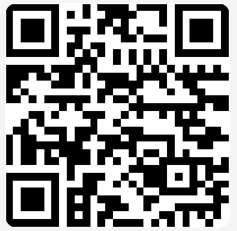

A cada 1 minuto, uma criança nasce sem identidade no Brasil. Estamos aqui para mudar essa estatística.
O que eles perdem?
Assistência Médica
Sem identificação, o cidadão perde o acesso a tratamentos pelo SUS, cirurgias e remédios de alto custo.
Direito ao Estudo
Dificuldade em efetuar matrículas escolares e participar de exames nacionais como o ENEM.
Segurança e Justiça
Sem identidade, o cidadão perde a proteção da lei, ficando impedido de registrar ocorrências, casar civilmente ou herdar bens da família.
Cidadania Plena
Impedimento de votar, ser votado ou acessar programas de assistência social do governo.
"Onde o Estado vê números, nós vemos rostos. Nenhuma existência deve ser condenada ao esquecimento. Conheça a força que transforma a invisibilidade em pertencimento."
Quem somos?
Nossa missão
Erradicar a invisibilidade civil através do suporte prático na obtenção de documentos básicos. Acreditamos que o registro é a porta de entrada para a dignidade e cidadania.
Sua ação transforma VIDAS
O que para muitos é apenas um papel, para outros é o direito de existir, e sua doação atua diretamente na superação das barreiras financeiras que perpetuam a invisibilidade civil. Os recursos são destinados ao custeio de passagens de ônibus e deslocamentos até cartórios ou postos de atendimento, garantindo que a distância física não seja um impedimento, além de cobrir taxas estaduais para emissão de segundas vias e certidões essenciais para quem não se enquadra nos critérios de gratuidade automática. Com esse suporte, financiamos o suporte documental e logístico necessário para que cidadãos em situação de vulnerabilidade possam acessar serviços básicos de saúde, educação e trabalho, transformando o reconhecimento legal em uma porta aberta para a dignidade.
QR Code para contribuição via PIX

contato@paraalemdoolhar.org